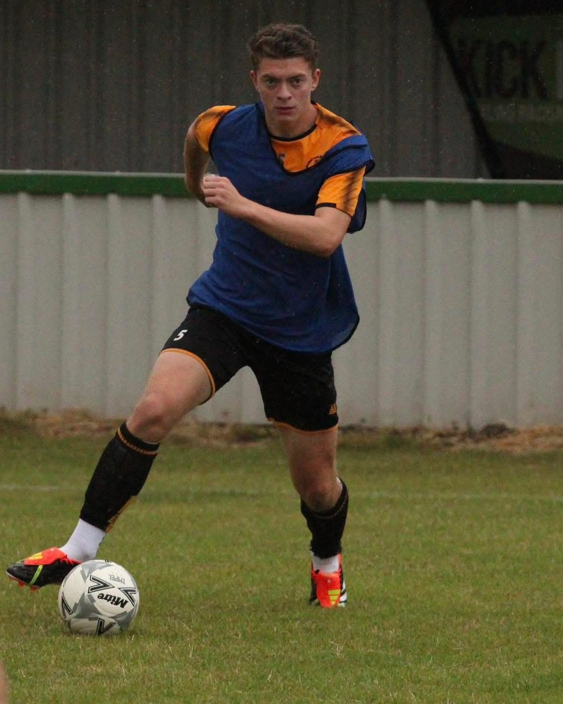
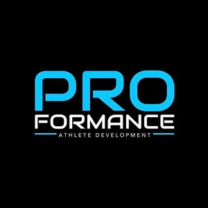
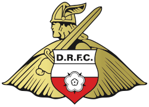
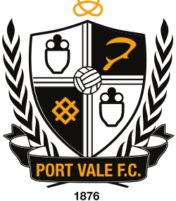

The number 8 role demands more than any other position on the pitch. You need to defend, carry, create, tackle, head, pass short, pass long, read the game and set the tempo. Most players do two or three of those well. Joe does all of them, and the footage, data and scout assessments from the 2025/26 season back it up.
Below, each area of his game is broken down with video evidence from senior men's football at Step 5 in 2025/26, supported by verified athletic testing data and third-party assessments. This isn't academy football against kids his own age. This is grown men's football, and he's been playing it regularly since he was 16. From 2026/27 he steps up to Step 4 with Ashington AFC.

A number 8 who can only recycle gives the opposition time to reset. The complete version takes the ball forward themselves — recognising the moment, breaking the line before cover arrives, and forcing defenders to commit. Without ball-carrying weight in midfield, the team has to play wider or rely on patterns the opposition can read.

"Over the years, his dedication to refining his running technique has yielded remarkable improvements in his overall speed and agility. The technical cues in his running and the improvements in his speed over the last few years have been ridiculous."
Lee Moore
Head Coach, PROformance Athlete Development (9 years)

"Showed the confidence and technical ability to carry the ball out of defence and into higher midfield areas."
Jack Manship
Scout, Doncaster Rovers / Minnesota United

"When you were able to drive forwards you were an asset to the attacking play. As a strong competitor you can really drive at players and draw fouls or threaten."
John Rhodes
Scout, Shrewsbury Town FC
Joe carries with purpose. He doesn't dribble for the sake of it — he drives forward to break lines, commit defenders and create advantages for the players around him. At 6'2" and 89.9kg with a verified top speed of 34 km/h, defenders can't bump him off the ball or run him down.
Watch how he picks his moments. He recognises when a carry is more effective than a pass, and he has the physical tools to execute it against senior men.
Possession at this level isn't about hiding the ball — it's about playing forward when the option appears. A complete 8 is two-footed, comfortable on either side, and picks the right pass rather than the safe one. They keep the team moving, not just keeping the ball.

"From a technical aspect I can't speak highly enough of Joe and would say this is his outstanding attribute. Superb with both right and left foot in terms of close ball control, first touch and short passing."
Mark Hodgson
Head Coach, Brazilian Soccer Schools (11 years)
"Lovely weight of pass, fizzes the ball through the lines into feet and runners."
David Banjura
Former National League Chief Scout
"Calm and composed on the ball. Good ability and control shown."
William Kinniburgh
Scout, Motherwell / Oxford United
Two-footed, composed on the ball, and clean in his execution. Joe's first touch is consistently good under pressure, and he picks the right pass rather than the safe one. His weight of pass — the ability to play the ball at exactly the right pace — is something scouts have highlighted repeatedly.
Most central midfielders can play one-touch when the ball comes to feet with space. The complete version handles the moments when there isn't space — back to goal, a man on, contact incoming — and still finds the forward pass. This is the bit that separates levels.

"He is very rarely flustered when under pressure and is able to turn away from defenders, protecting the ball, with great ease, as well as being able to drive forwards into space with the ability to beat defenders in 1 vs 1 situations."
Mark Hodgson
Head Coach, Brazilian Soccer Schools
"Receive on back foot well, hold off man, head up to know where to play early or utilises his strength to roll man and play forward."
David Banjura
Former National League Chief Scout
"Joe showed good technical ability to turn against the flow and play an accurate progressive pass."
Tom Fry
Scout, Port Vale FC

Joe receives on his back foot, uses his body to shield, and turns or plays forward before the pressure arrives. The IMTP (isometric mid-thigh pull) score at 3.7× bodyweight is what lets him hold off senior men in midfield without getting bullied off the ball.
The 8 sets the speed of the team. When possession needs to settle, they slow it. When the moment is right to go through the lines, they speed it up. Tempo is decided in midfield more than anywhere else on the pitch.

"His passing is very accurate, having the ability to play short passes in tight areas, as well as often switching the play to help form another attack on the opposite side of the pitch. This could be done using either foot."
Mark Hodgson
Head Coach, Brazilian Soccer Schools (11 years)
"Joe displayed a good variety to his ability as he showed the ability to control the tempo from the back and in midfield in small moments, as well as showing the initiative to push possession forward with either a progressive pass or carry."
Jack Manship
Scout, Doncaster Rovers / Minnesota United
"Powerful runner, good range of passing and able to control the tempo of the game. Comfortable in possession in any area of the park."
William Kinniburgh
Scout, Motherwell / Oxford United
Joe dictates the rhythm of the game. When the team needs to keep it, he keeps it. When the tempo needs to go up, he accelerates it. His short passing is crisp and purposeful — he doesn't just recycle; he moves the team forward through intelligent combinations.
Switching play, fizzing a pass into a runner, putting a ball into the channel for a striker to chase — the complete 8 has the range to change the picture quickly. This is what separates a midfielder who keeps possession from one who creates with it.

"The level of ball control Joe has developed over his 11 years with us at Brazilian Soccer Schools has given him superb awareness and vision, as he has the ability to play with head up and scan the pitch both with and without the ball."
Mark Hodgson
Head Coach, Brazilian Soccer Schools (11 years)
"Your ability to see a forward pass is excellent. Your control and composure is very good. The standard in your passing and receiving a ball in space would only improve with better players around you."
William Kinniburgh
Scout, Motherwell / Oxford United
"He is a threat with the ball, can pick a hard pass, play through the lines, and judges his attacking runs well."
David Banjura
Former National League Chief Scout
This is where Joe's range really shows. He switches the play accurately over 40-50 yards, fizzes balls through the lines into feet and runners, and delivers quality from wide and deep positions. The ability to see a forward pass and execute it with the right weight is what multiple scouts have flagged as his standout quality.
A midfielder who can't defend is half a player. The complete 8 reads the game early, wins the ball cleanly when needed, and covers ground for the centre-backs without being asked. The video shows the actions. The chart underneath shows the season-long outcome.

"He has now developed into an extremely strong and physical athlete. This allows him to not only cover huge distances during games, but also dominate physically due to his height and strength."
Mark Hodgson
Head Coach, Brazilian Soccer Schools
"Covers in well deep allowing CBs to step out to engage, and to press wide."
David Banjura
Former National League Chief Scout
"On field personality and combative nature which allows you to win duels all over the pitch."
Aaron Barnes
Scout, Stoke City FC
Joe wins the ball cleanly, blocks shots, and covers his centre-backs when they step forward. He reads the game early enough to be in position before the danger develops. He's not just willing to defend — he's good at it. The defensive gap shown above isn't a coincidence; it's positioning, communication and willingness to cover, applied for 90 minutes from minute one.
When the team loses the ball higher up, the 8 is usually first one back. Sprint back, get goal-side, deal with what arrives — including in the air. The video shows the runs and the duels. The athletic numbers underneath are what underwrites them.

"Physically he is for want of a better term 'a machine' with strength — pace — power and stamina to boot. He fits the modern profile of being athletically capable to play at the intensity the game requires."
Danny Fowler
UEFA A Licence, DF Coaching / Middlesbrough Academy
"Cover the ground well on recovery run. From 1 side of the pitch to the other stopping a counterattack and winning a throw in."
William Kinniburgh
Scout, Motherwell / Oxford United
"Recovery running and desire to defend as a cover was excellent."
Richard Eyley
Scout, Sheffield United FC
At 6'2" with elite sprint acceleration (0.91s over 5m) and a 62.5cm Abalakov jump, Joe wins aerial duels and recovers ground quickly when caught upfield. His recovery runs are purposeful — he doesn't jog back, he sprints. This is where the athletic profile pays for itself in match situations.
Every scout and coach who has worked with Joe mentions the same thing unprompted: his leadership and on-field personality. He organises from the first whistle, takes responsibility under pressure, and shows a maturity that people don't expect from an 18-year-old. It's the thread that runs through every report below.
"Joe is an incredibly hard working young man who is always willing to push himself to his limits, but also strives to help everyone he works with, making him an excellent team player."
Mark Hodgson
Head Coach, Brazilian Soccer Schools
"I have never met anyone as determined as Joe in terms of mindset and wanting to achieve at something. From the first session I could see how determined and committed he was. He is like a sponge. He listens, commits and I only need to show him something once and he's away with it."
Lee Moore
Head Coach, PROformance Athlete Development
"Joe not only communicates on the pitch to help organise his team but he vocalises messages as captain in pre match and half time team talks which have clear messages for the team."
Tom Thorogood
Head of Years 9–11, Red House School
"Psychologically Joe has an inner drive and confidence where he knows he's on a journey to achieve whatever the best outcome may be for him. He has confidence in his ability but never crosses that line into arrogance with it. He is very self-aware and conscientious."
Danny Fowler
UEFA A Licence, DF Coaching / Middlesbrough Academy
"I really like your on-field personality, you appear take responsibility. You very much come across as a leader, talking and giving instructions to teammates the moment you came on to the pitch to the final whistle and even tactical in game information by point and passing on runners to your Centre Backs. Keep this level of communication and leadership up as it rare to see from young players and very much an important attribute that scouts look at when assessing a player."
Aaron Barnes
Scout, Stoke City FC
"Despite carrying an injury and despite the early heavy scoreline against his team, Joe showed no visible signs of getting over-frustrated or blaming teammates after a mistake. Multiple instances of Joe offering advice to teammates. Showed other good leadership qualities such as encouraging and praising teammates throughout the game."
Jack Manship
Scout, Doncaster Rovers / Minnesota United
"I sense a positive and encouraging character. Body language suggests a calm positivity. Confident to receive under pressure. Showed a high level of responsibility."
Richard Eyley
Scout, Sheffield United FC
"On scoring, his teammates all enjoyed his success, all ten outfield players quick to congratulate him. There was no orchestrated nor ego focused celebration, he looked a well-liked member of the Gateshead team."
Tony Kinnear
Head Scout, Partick Thistle FC
"The communication of the player was superb from the moment he came onto the pitch until the match finished, even in the late stages when the match was all but over as a contest."
David Straughair
Scout, Middlesbrough FC
Four long-term coaches and five independent scouts from five different clubs — all unprompted, all pointing at the same thing. That's not a coincidence.
The eight above are the means. This is the end. Chances created, assists and goals — drawn from senior men’s football at Step 5 and Step 4, with each clip captioned on screen to show which parts of his game produced it. The ones a teammate didn’t finish are left in deliberately: creating the chance is the midfielder’s job, converting it isn’t.
data-vid="<YouTube ID>" to this element to wire it up
"Your ability to see a forward pass is excellent. Your control and composure is very good. The standard in your passing and receiving a ball in space would only improve with better players around you."
William Kinniburgh
Scout, Motherwell / Oxford United
"He is a threat with the ball, can pick a hard pass, play through the lines, and judges his attacking runs well."
David Banjura
Former National League Chief Scout
"Superb two-footed technician with vision and awareness. Dominates through intelligence and calmness in possession."
Mark Hodgson
Head Coach, Brazilian Soccer Schools
"Excellent reading of the game and decision-making. Very good range of passing and excellent positioning; tactically disciplined and composed in possession."
Middlesbrough FC
Academy Assessment
"Joe displayed a good variety to his ability as he showed the ability to control the tempo from the back and in midfield in small moments, as well as showing the initiative to push possession forward with either a progressive pass or carry."
Jack Manship
Scout, Doncaster Rovers / Minnesota United
"Joe showed good technical ability to turn against the flow and play an accurate progressive pass."
Tom Fry
Scout, Port Vale FC
Two independent scouts and two long-term assessors, all describing the same thing in their own words: the pass that breaks a line, chosen early and weighted properly. The reel is that written assessment, happening.
The same profile fits a modern CB
The physical, positional and ball-playing profile that makes Joe a complete 8 also makes him a modern centre-back. Seventeen senior games across five clubs, and current EFL scout interest in the role.
Read The Modern Centre-Back